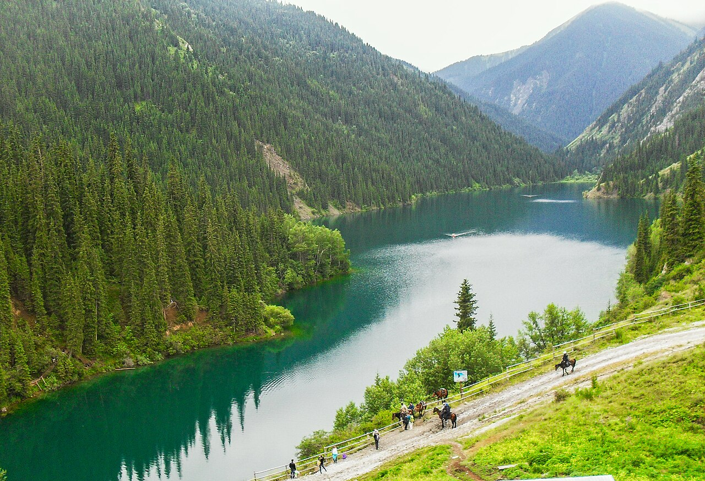
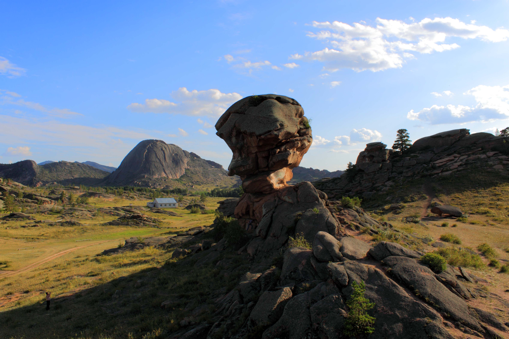
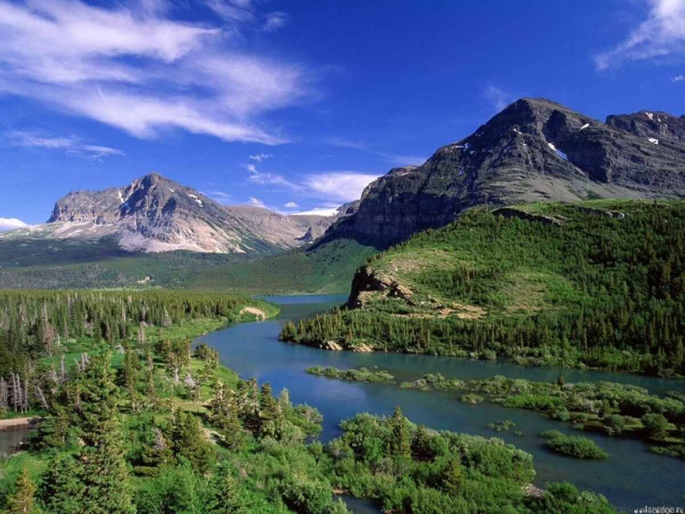

Bektau-Ata Oasis
A unique volcanic mountain range rising from the flat Kazakh steppe. Famous for subterranean water caves.
Plan TripDiscover pristine natural monuments, alien-like landscapes and unforgettable places.
Volcanic oasis in Central Kazakhstan.

White limestone cliffs of Mangystau.

Ancient white chalk formations.

Dramatic red sandstone landscape.

Alpine lakes among pine forests.

National park and the Singing Dune.

Mountain oasis of Pavlodar Region.

Forested mountains of Central Kazakhstan.

Famous sunken spruce forest.
Three columns on large screens, two on medium screens and one on mobile.
A unique volcanic mountain range rising from the flat Kazakh steppe. Famous for subterranean water caves.
Plan Trip
A striking white limestone canyon on the Ustyurt Plateau, created by the ancient ocean bed.
Plan Trip
Unique snow-white chalk deposits known for unusually shaped limestone towers and ancient fossils.
Plan Trip
Often called the little brother of the Grand Canyon, featuring dramatic red sandstone formations.
ExploreA system of three alpine lakes nestled in the northern Tien Shan mountains, surrounded by pine forests.
Explore
A vast national park famous for its massive singing sand dune that produces a deep rumble in dry weather.
ExploreA picturesque oasis in the Pavlodar region with bizarre rock formations and crystal-clear lakes.
ExploreDense mountain forests hiding pure spring lakes and diverse wildlife in Central Kazakhstan.
Explore
A beautiful mountain valley known for powerful waterfalls, hot springs and dense coniferous woods.
Explore
A mountain lake created by an earthquake, famous for dried spruce trunks emerging from turquoise waters.
Explore